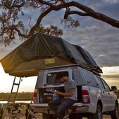
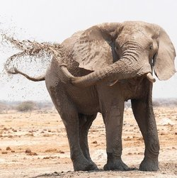
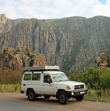

Sleeping on the roof of the 4x4
The 4x4 will be fully equipped with tenting and cooking materials. From the roof of the car, we will be
able to see the sunset and sunrise in one of the most beautiful places in Africa.

The big 5
During our safari, we will see plenty of animals. If we are lucky, we see a few, or maybe all of the big
5. The most common animal of the big 5 is the elephant, it is very likely that we will see plenty of
them.

Self-drive safari
A self-drive safari means that you are equipped with a propper briefing and the necessary tools such as
a satellite phone, but you will drive without a guide. The self-drive safari thus provides ultimate
freedom and privacy during the tour through Botswana.